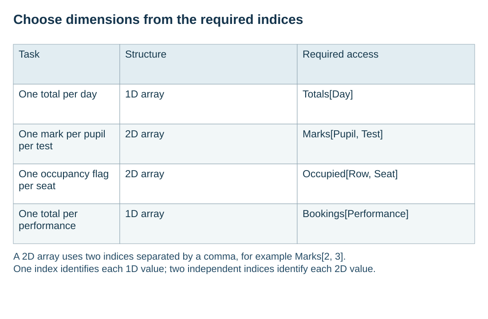

Choose dimensions for retained application data
Visual overview
Choose dimensions from the required indices

Visual transcript
- Task: One total per day; Structure: 1D array; Required access: Totals[Day].
- Task: One mark per pupil per test; Structure: 2D array; Required access: Marks[Pupil, Test].
- Task: One occupancy flag per seat; Structure: 2D array; Required access: Occupied[Row, Seat].
- Task: One total per performance; Structure: 1D array; Required access: Bookings[Performance].
- A 2D array uses two indices separated by a comma, for example Marks[2, 3].
- One index identifies each 1D value; two independent indices identify each 2D value.
Core explanation
Separate the values the application must retain from the order in which it processes actions. A theatre can store one occupancy flag per row and seat in a 2D BOOLEAN array. A separate 1D INTEGER array can store one booking total per performance, because performance number alone identifies each total.
Describe the meaning and bounds of each dimension explicitly. Occupied[Row, Seat] uses two indices; Bookings[Performance] uses one. The declaration should follow the data's actual indexing needs. Adding dimensions simply because a system is large creates an unnecessary or misleading model.
Worked example · Choose two arrays for a theatre
- Seat data
DECLARE Occupied : ARRAY[1:8, 1:12] OF BOOLEAN stores one flag for each of 96 seats.
- Performance totals
DECLARE Bookings : ARRAY[1:6] OF INTEGER stores six totals.
- Access
Occupied[3, 7] selects row 3, seat 7; Bookings[2] selects the total for performance 2.